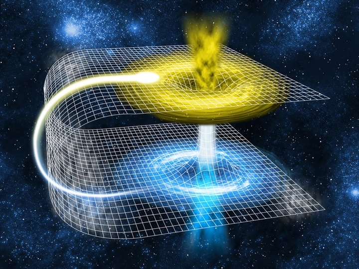

Du hành thời gian có thật hay không?
Từ những bộ phim khoa học viễn tưởng như Back to the Future, Doreamon hay Avengers: Endgame, hình ảnh con người bước qua các cỗ máy thời gian để trở về quá khứ hay du hành tới tương lai luôn khiến chúng ta vừa kinh ngạc vừa tò mò. Nhưng liệu những tưởng tượng ấy có cơ sở khoa học hay chỉ là sản phẩm của trí tưởng tượng phong phú?
Trong thế giới vật lý hiện đại, du hành thời gian không hoàn toàn là điều bất khả thi: thuyết tương đối của Einstein và các nghiên cứu về vũ trụ mở ra những khái niệm cho phép thời gian trôi chậm hơn hoặc thậm chí có thể “uốn cong” trong điều kiện cực đoan. Bài viết này sẽ cùng khám phá các lý thuyết du hành thời gian, đánh giá tính khả thi, đồng thời phân tích những thách thức mà con người phải đối mặt nếu muốn biến viễn tưởng thành hiện thực.
1. Thuyết tương đối hẹp và giãn nở thời gian
Một trong những bước đột phá lớn nhất trong vật lý hiện đại chính là thuyết tương đối hẹp do Albert Einstein đề xuất vào năm 1905. Thuyết này thay đổi hoàn toàn cách con người nhìn nhận về không gian và thời gian, khẳng định rằng thời gian không phải là tuyệt đối, mà phụ thuộc vào vận tốc của người quan sát. Nói cách khác, hai người ở hai trạng thái chuyển động khác nhau sẽ trải nghiệm thời gian không giống nhau, một khái niệm tưởng chừng khó tưởng tượng nhưng đã được chứng minh bằng các phương trình vật lý chính xác.
Một trong những hiện tượng quan trọng được rút ra từ thuyết tương đối hẹp là giãn nở thời gian (time dilation). Khi một vật thể di chuyển càng gần tốc độ ánh sáng, thời gian đối với vật thể đó sẽ trôi chậm hơn so với thời gian của người đứng yên. Điều này có nghĩa là nếu một phi hành gia thực hiện chuyến du hành với tốc độ cực cao trong vũ trụ, sau khi quay trở lại Trái Đất, họ sẽ già đi ít hơn so với những người vẫn ở trên hành tinh. Hiện tượng này không chỉ là lý thuyết: các thí nghiệm với đồng hồ nguyên tử trên máy bay hoặc vệ tinh đã xác nhận thời gian trôi chậm đi một cách chính xác khi vật thể chuyển động nhanh hơn.
Ví dụ minh họa dễ hình dung: Giả sử bạn là một phi hành gia và lên một con tàu vũ trụ bay gần tốc độ ánh sáng trong vài năm, trong khi trên Trái Đất đã trôi qua cả chục năm. Khi trở về, bạn sẽ vẫn còn trẻ hơn so với bạn bè hay người thân của mình trên Trái Đất – giống như bạn “du hành về tương lai” mà không cần cỗ máy thời gian viễn tưởng nào.
Liên hệ thực tế: Giãn nở thời gian chính là một dạng du hành thời gian về phía tương lai, nhưng chỉ ở mức nhỏ và chỉ áp dụng được trong các điều kiện cực đoan, như vận tốc cực cao gần ánh sáng. Mặc dù con người hiện nay chưa thể đạt tốc độ đó, hiện tượng này đã được chứng minh và là cơ sở khoa học quan trọng cho việc hiểu du hành thời gian từ góc độ vật lý.
Một ý tưởng về cỗ máy thời gian đơn giản mà con người có thể tạo được trong thời đại này mà TrithucWorld có thể nghĩ ra như sau:
Hãy tưởng tượng một cỗ máy gồm hàng chục tầng bánh răng nối tiếp, mỗi bánh răng đều tăng tốc cho bánh răng tiếp theo theo tỷ lệ rất lớn. Khi bạn quay bánh răng đầu tiên 1 vòng, bánh răng thứ hai sẽ quay nhanh hơn nhiều lần, bánh răng thứ ba quay nhanh hơn nữa, và cứ thế, tốc độ quay tăng theo cấp số nhân qua mỗi tầng. Khi bánh răng quay được 1 vòng thì bánh cuối cùng sẽ quay được hàng tỉ tỉ vòng. Nếu có ai đó đứng trên bánh răng cuối cùng họ sẽ di chuyển với vận tốc vượt qua ánh sáng.
Nhược điểm là để quay được bánh răng đầu tiên, lượng năng lượng cần thiết là cực kỳ khổng lồ mà thế giới hiện nay vẫn chưa thể cung cấp nổi, nên đây vẫn chỉ là một cỗ máy thời gian mang tính lý thuyết mà thôi. Biết đâu trong tương lai con người khai thác được triệt để năng lượng từ vũ trụ, họ có thể khởi động được cỗ máy này thì sao?
2. Thuyết tương đối rộng và hiệu ứng trọng lực
Nếu thuyết tương đối hẹp của Einstein giải thích cách tốc độ ảnh hưởng đến thời gian, thì thuyết tương đối rộng mở rộng khái niệm này bằng cách chứng minh rằng trọng lực cũng có thể làm “uốn cong” thời gian. Theo lý thuyết này, không gian và thời gian không tách rời mà kết hợp thành một “tấm vải” bốn chiều gọi là không-thời gian (spacetime). Khi một vật thể có khối lượng cực lớn — như hành tinh, sao neutron hay hố đen — xuất hiện, nó sẽ làm cong tấm vải này, khiến thời gian ở gần đó trôi chậm hơn so với nơi có trọng lực yếu hơn.
Để dễ hình dung, bạn có thể tưởng tượng không-thời gian như một tấm cao su căng phẳng. Nếu bạn đặt lên đó một quả bóng bowling nặng, tấm cao su sẽ bị lõm xuống — đó chính là hiệu ứng cong không gian do trọng lực. Một viên bi nhỏ lăn gần chỗ lõm sẽ chuyển động chậm lại, giống như thời gian bị kéo giãn khi ở gần một vật thể có khối lượng lớn.
Ví dụ tiêu biểu nhất chính là gần hố đen (black hole) – vùng không gian có lực hấp dẫn mạnh đến mức ánh sáng cũng không thể thoát ra. Nếu một phi hành gia tiến gần rìa hố đen, thời gian đối với họ sẽ trôi chậm hơn rất nhiều lần so với người quan sát ở xa. Khi họ rời khỏi khu vực đó và quay lại, có thể chỉ vài giờ trôi qua đối với họ, nhưng hàng chục hoặc hàng trăm năm đã qua đối với người ở Trái Đất. Hiện tượng này từng được mô phỏng sinh động trong bộ phim Interstellar, nơi các nhà du hành vũ trụ chỉ trải qua vài giờ trên hành tinh gần hố đen Gargantua, trong khi trên Trái Đất đã trôi qua hàng chục năm.
Từ góc độ khoa học, đây chính là dạng “du hành thời gian một chiều” – đi về tương lai, hoàn toàn có cơ sở vật lý. Tuy nhiên, để xảy ra trong thực tế, con người cần tiếp cận những điều kiện cực kỳ khắc nghiệt mà hiện nay chưa có công nghệ nào chịu đựng nổi: mật độ năng lượng và lực hấp dẫn khổng lồ quanh hố đen có thể phá hủy mọi vật thể. Vì vậy, dù về mặt lý thuyết là khả thi, du hành thời gian nhờ hiệu ứng trọng lực vẫn là một viễn cảnh nằm ở ranh giới giữa khoa học và tưởng tượng, chờ đợi bước tiến đột phá của nhân loại trong tương lai.
3. Khả năng du hành ngược thời gian
Nếu du hành đến tương lai đã có phần “chạm” vào thực tế qua thuyết tương đối, thì du hành ngược về quá khứ lại là một trong những khái niệm gây tranh cãi và hấp dẫn nhất của vật lý hiện đại. Nhiều nhà khoa học từng cố gắng tìm cách chứng minh liệu thời gian có thể “uốn cong đến mức quay trở lại chính nó” hay không — và từ đó xuất hiện hai ý tưởng nổi bật: lỗ sâu (wormhole) và đường cong thời gian đóng (closed timelike curve – CTC).
Theo thuyết tương đối rộng, không-thời gian có thể bị bẻ cong đến mức hai điểm rất xa trong vũ trụ được nối liền bằng một “đường hầm”, gọi là lỗ sâu (wormhole). Về lý thuyết, nếu một đầu của lỗ sâu được “dịch chuyển” về một thời điểm khác trong không gian-thời gian, vật thể đi qua đó có thể đi từ hiện tại về quá khứ, hoặc ngược lại – tức là du hành thời gian hai chiều. Đây là cơ chế thường được mô tả trong các tác phẩm khoa học viễn tưởng, từ Interstellar đến Doctor Strange.
Tuy nhiên, vấn đề là để một lỗ sâu tồn tại ổn định, nó cần được giữ mở bằng một dạng năng lượng đặc biệt gọi là năng lượng âm (negative energy) – thứ mà cho đến nay vẫn chưa được chứng minh có thể tạo ra hoặc kiểm soát trong thực tế. Nếu không có năng lượng âm, lỗ sâu sẽ sụp đổ ngay lập tức trước khi bất kỳ vật thể nào có thể đi qua.
Một khái niệm khác, đường cong thời gian đóng (Closed Timelike Curve), mô tả việc một vật thể di chuyển trong không-thời gian theo quỹ đạo khép kín, và cuối cùng trở về điểm xuất phát trong quá khứ. Tuy nhiên, nếu điều này xảy ra, nó sẽ dẫn đến hàng loạt nghịch lý thời gian nổi tiếng, như nghịch lý ông nội (Grandfather Paradox) – nơi người du hành về quá khứ có thể ngăn chính sự ra đời của mình. Các nhà vật lý như Stephen Hawking từng lập luận rằng vũ trụ có thể tự “bảo vệ” mình khỏi nghịch lý, bằng cách ngăn cản mọi hình thức du hành ngược thời gian qua cái gọi là chronology protection conjecture (giả thuyết bảo vệ dòng thời gian).

Dù có nhiều giả thuyết hấp dẫn và một số mô hình toán học ủng hộ, chưa có bằng chứng thực nghiệm nào chứng minh con người có thể quay ngược thời gian. Những điều kiện vật lý cần thiết – như năng lượng âm, mật độ vật chất vô hạn hoặc sự ổn định của lỗ sâu – đều vượt xa khả năng công nghệ hiện nay. Vì vậy, cho đến thời điểm này, du hành về quá khứ vẫn là một giả thuyết đẹp, đầy mê hoặc nhưng chưa thể trở thành hiện thực – một ranh giới nơi khoa học, triết học và trí tưởng tượng giao thoa.
5. Thách thức thực tiễn
Dù những lý thuyết về du hành thời gian nghe có vẻ đầy hứa hẹn, việc biến chúng thành hiện thực lại là một thách thức gần như bất khả thi trong bối cảnh công nghệ hiện nay. Để đạt đến vận tốc gần bằng ánh sáng — điều kiện cần cho hiện tượng giãn nở thời gian — một vật thể phải tiêu thụ lượng năng lượng khổng lồ, gần như vô hạn theo phương trình E=mc2E = mc^2 của Einstein. Ngay cả với công nghệ tiên tiến nhất, con người hiện vẫn chưa thể chế tạo bất kỳ thiết bị nào đủ khả năng duy trì tốc độ và năng lượng ở mức đó mà không tan rã vì nhiệt độ, áp suất hay ma sát.
Ngoài ra, các điều kiện môi trường cần thiết cho du hành bằng hiệu ứng trọng lực (như gần hố đen hoặc sao neutron) cũng mang tính cực đoan đến mức không sinh vật sống nào có thể tồn tại. Lực hấp dẫn khổng lồ có thể kéo giãn cơ thể, phân rã cấu trúc nguyên tử và phá hủy mọi vật thể trước khi kịp “trải nghiệm” bất kỳ hiệu ứng thời gian nào.
Về mặt lý thuyết, du hành ngược thời gian còn tiềm ẩn vô số rủi ro và nghịch lý: những mâu thuẫn logic như “nghịch lý ông nội”, vấn đề năng lượng âm, hay sự thiếu nhất quán trong các mô hình toán học. Hiện nay, chưa có thực nghiệm nào chứng minh khả năng du hành thời gian của con người, và mọi nghiên cứu vẫn dừng ở mức mô phỏng hoặc giả định toán học trong môi trường lý tưởng.
6. Kết luận
Du hành thời gian, từ lâu, đã thôi thúc trí tưởng tượng của con người — từ những trang tiểu thuyết khoa học viễn tưởng cho đến các công trình vật lý hiện đại. Theo lý thuyết tương đối của Einstein, “du hành tới tương lai” là khả thi ở mức độ rất nhỏ, khi tốc độ hoặc lực hấp dẫn đủ lớn khiến thời gian trôi chậm lại. Tuy nhiên, “du hành về quá khứ” vẫn là một viễn tưởng, vướng mắc giữa những giới hạn của vật lý và những nghịch lý chưa có lời giải.
Dù vậy, giá trị của những lý thuyết này không chỉ nằm ở khả năng thực hiện, mà còn ở việc mở rộng hiểu biết của con người về bản chất thời gian, không gian và vũ trụ. Mỗi bước tiến trong vật lý — từ cơ học lượng tử đến vũ trụ học — đều có thể mang đến manh mối mới về cách thời gian vận hành. Có thể, trong tương lai xa, khi công nghệ và nhận thức tiến thêm nhiều thế kỷ, con người sẽ tìm ra những điều mà ngày nay ta chỉ dám tưởng tượng.
Cho đến lúc đó, du hành thời gian vẫn là biên giới mờ giữa khoa học và mơ ước, nơi trí tuệ và khát vọng khám phá của nhân loại vẫn không ngừng vươn tới.